Candidate List 20261014Last night — ZTF: 1,713 passed basic cuts (15 young) · LSST: 0 passed basic cuts (0 young)Previous Day Next Day
Section 1: New Sources (age<1d) Section 2: Old (1-5d) sources observed last nightplaceholder
Section 1: New Afterglow/FBOT Cands Last Night (0)
Section 2: Older Sources Observed Last Night (3)
0. [ZTF] ZTF26acahriv (FBOT?) [Back to Top] [Share] [Trigger Swift] [Fritz Alert] [Fritz Source] [Lasair]RA, Dec: 338.72553, 47.97363 22h34m54.13s, 47d58m25.07sGalactic (l, b): 100.58439, -8.88534 ext(g-r) = 0.164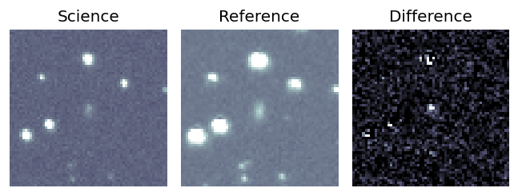
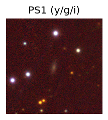

TESS: Sectors [16 56 57 76 77 83 84]
PS1: 1 source in 3 arcsec Closest: d = 1.24 arcsec photoz=0.19+/-0.07 peak abs mag = -20.77
LegacySurvey: 0 sources in 3 arcsec
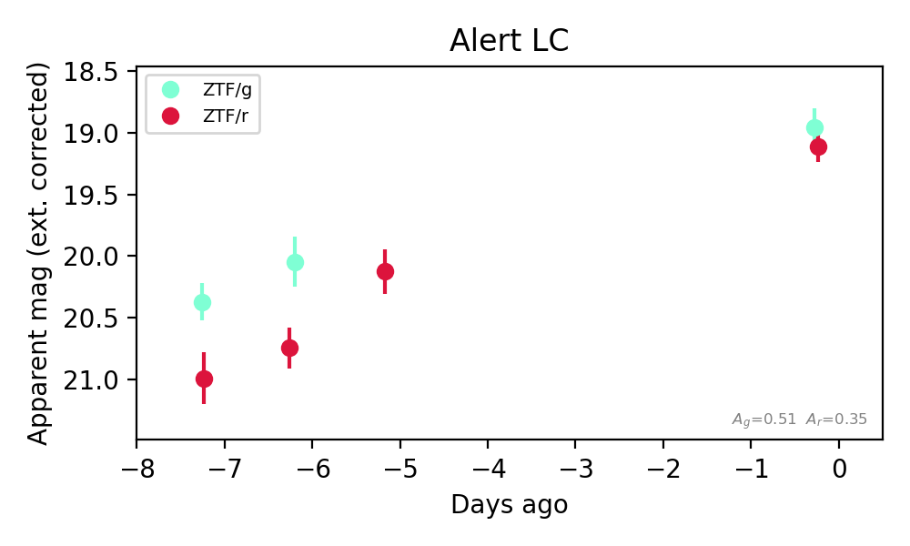
Extinction-corrected gr color:
From alerts: -0.15 +/- 0.21 mag
Consistent with synchrotron, g-r>0!
Rise Rate:
g: 0.2 mag/day
r: 0.26 mag/day
Fade Rate:
1. [ZTF] ZTF26acbeaim (FBOT?) [Back to Top] [Share] [Trigger Swift] [Fritz Alert] [Fritz Source] [Lasair]RA, Dec: 28.78218, 27.16669 1h55m7.72s, 27d10m0.07sGalactic (l, b): 139.9695, -33.58913 ext(g-r) = 0.078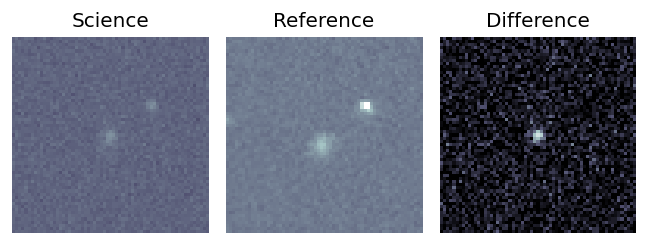
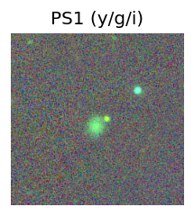
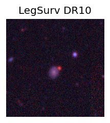
TESS: Sectors [17 85]
SDSS (<15 kpc):Found SDSS phot-z: z=0.23; peak abs mag = -20.95
PS1: 0 sources in 3 arcsec
LegacySurvey: 1 sources in 3 arcsec Closest: d = 0.59 arcsec, 202.2 deg (east of north) photoz=0.36 (68% bounds 0.13, 1.14), type=EXP peak abs mag (ext. corrected) = -22.02 (68% bounds -19.58, -25.07)
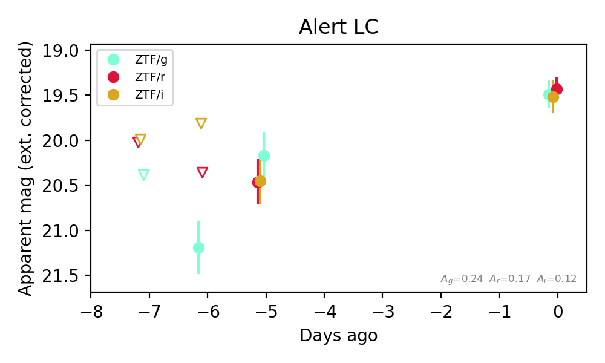
Extinction-corrected gr color:
From alerts: 0.06 +/- 0.21 mag
Extinction-corrected gi color:
From alerts: -0.03 +/- 0.24 mag
Extinction-corrected ri color:
From alerts: -0.08 +/- 0.23 mag
Consistent with synchrotron, g-r>0!
Rise Rate:
g: 0.22 mag/day
r: 0.2 mag/day
i: 0.19 mag/day
Fade Rate:
2. [ZTF] ZTF26acbeqap (Afterglow?) [Back to Top] [Share] [Trigger Swift] [Fritz Alert] [Fritz Source] [Lasair]RA, Dec: 53.1498, 5.21175 3h32m35.95s, 5d12m42.32sGalactic (l, b): 179.37171, -39.39301 ext(g-r) = 0.178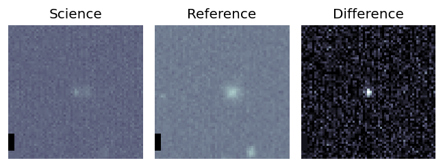
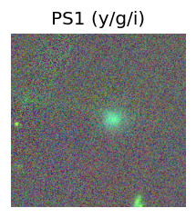
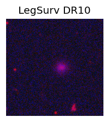
TESS: Sectors [ 31 109]
PS1: 0 sources in 3 arcsec
LegacySurvey: 0 sources in 3 arcsec
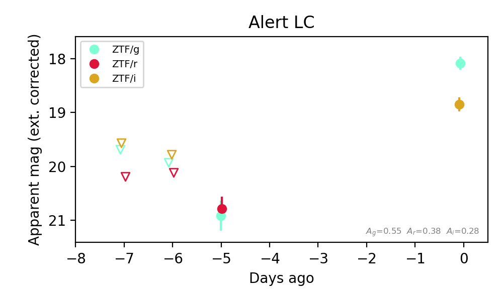
Extinction-corrected gr color:
From alerts: 0.13 +/- 0.35 mag
Extinction-corrected gi color:
From alerts: -0.76 +/- 0.18 mag
Consistent with synchrotron, g-r>0!
Rise Rate:
g: 0.57 mag/day
i: 0.16 mag/day
Fade Rate: